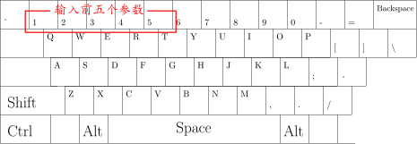
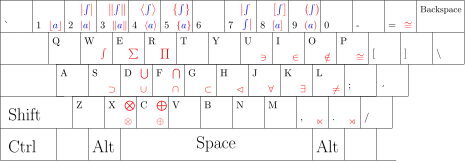

我的 LyX 快捷键 (v1.0)
LyXBind说明书
如何开始
从Gitee下载：https://gitee.com/mathist/LyXBind/tree/v1.0
这里用到三个文件：main.bind， lyx.ahk 和 template.lyx (Linux用户不需要 lyx.ahk)
LyX ▷ 工具 ▷ 首选项 ▷ 编辑 ▷ 快捷键 ▷ 浏览
选中下载到的 main.bind，点确定以关闭“首选项”窗口使之生效。
Windows用户需要下载AutoHotkey：https://www.autohotkey.com
安装AutoHotkey之后，双击 lyx.ahk 即可运行。它只有一行代码：
!Space::SendInput {F13}
功能是使 ALT+空格 发送 F13。
以 template.lyx 为模板新建文档，即可正常使用这里的所有快捷键。
用到的键位
Ctrl 引导的快捷键
Alt 引导的快捷键
Alt+a 引导的快捷键

Alt+f 引导的快捷键
Alt+i 引导的快捷键
Alt+m 引导的快捷键
Alt+n 引导的快捷键
Alt+o 引导的快捷键
Alt+英文逗号 引导的快捷键
有26个快捷键
功能：用小写字母输入花体大写字母
例如：按下Alt + 逗号，松手，再按下a，即可得到 $\mathcal{{\color{red}A}}$
Alt+英文句号 引导的快捷键
数字 4 引导的快捷键

数字 5 引导的快捷键
数字 7 引导的快捷键
数字 8 引导的快捷键
数字 9 引导的快捷键

最后修改于 2021-05-04